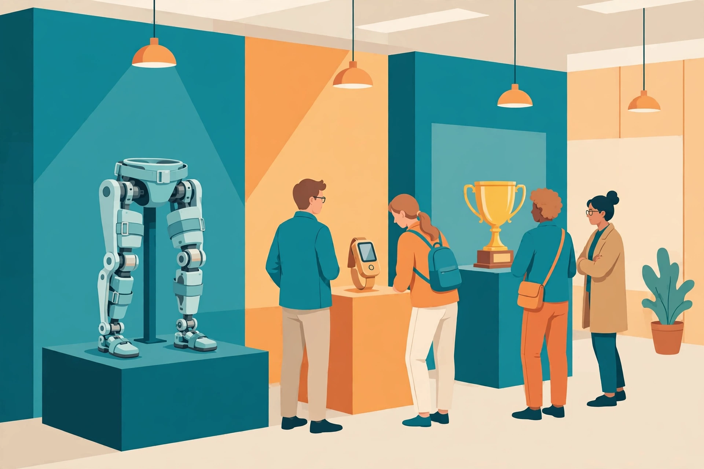

2026년 11월 24일

서울시가 22일 밝혔습니다. 서울시 지원을 받은 기업 27곳이 CES 2027 혁신상 34개를 받았습니다. 최고혁신상 3개가 포함됐습니다. CES는 내년 1월 미국 라스베이거스에서 열리는 세계 최대 IT·가전 전시회입니다.
최고혁신상을 받은 곳은 세 곳입니다. 유니유니는 카메라 없이 낙상·실신 같은 위험 상황을 감지하는 AI로 스마트홈 분야 최고혁신상을 받았습니다. 프로퓨지오는 영상의 깊이 정보로 화질을 개선하는 기술로 이미징 분야, 276홀딩스는 기업 간 거래·결제 데이터를 분석해 신용위험을 평가하는 AI로 핀테크 분야 최고혁신상을 받았습니다.
서울시는 올해 서울형 R&D에 최근 5년 중 가장 많은 425억 원을 투입했고, AI 연구개발 예산도 50억 원에서 70억 원으로 늘렸습니다. 수상한 기술들은 카메라·목소리·로봇처럼 생활과 가까운 쪽에 몰려 있다는 게 눈에 띕니다.